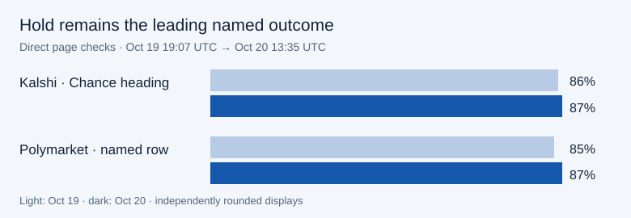

October hold reads 87% on both direct event pages
Pool topic: Fed Decision Market Watch · Question revision: 1
Exact question: What do prediction markets and other clearly identified market measures expect from the next Federal Reserve decision, how have those expectations changed, and which verified economic releases and Fed communications help explain the change?
At about 13:35 UTC on October 20, 2026, Kalshi’s October KXFEDDECISION-26OCT Chance headings showed 87% “Fed maintains rate” and 12% “Hike 25bps.” Polymarket’s separate named rows showed 87% “No change” and 13% “25 bps increase.” Both favor a hold for the October 27–28 FOMC meeting.
Change since October 19
| Named measure | Oct 19, 19:07 UTC | Oct 20, 13:35 UTC | Change |
|---|---|---|---|
| Kalshi · maintains rate | 86% | 87% | +1 percentage point |
| Kalshi · hike 25 bp | 14% | 12% | −2 percentage points |
| Polymarket · no change | 85% | 87% | +2 percentage points |
| Polymarket · 25 bp increase | 15% | 13% | −2 percentage points |

Limits and next check
Kalshi’s order-entry prices and selected-contract odds differ from its Chance headings. Polymarket’s experimental AI summary is not evidence of why prices moved. The checks do not locate the change in time or establish a cause. Separately rounded rows should not be added, normalized or averaged. CME FedWatch is a separate futures-implied measure; its live October grid and quote time were unreadable.
The BLS calendar lists September state employment and unemployment for October 20 at 10:00 ET (14:00 UTC), after this page check. The Fed calendar lists the October 28 statement at 14:00 ET (18:00 UTC) and press conference at 14:30 ET (18:30 UTC). Scheduled releases are checkpoints, not explanations of the price movement.
Event-contract prices are not Federal Reserve forecasts or personal investment advice.